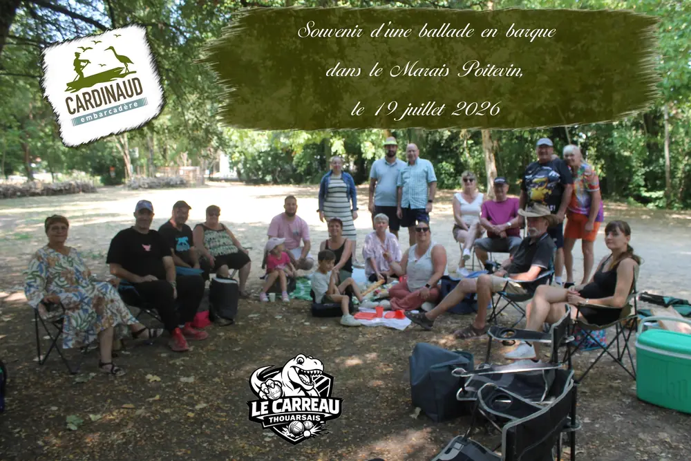
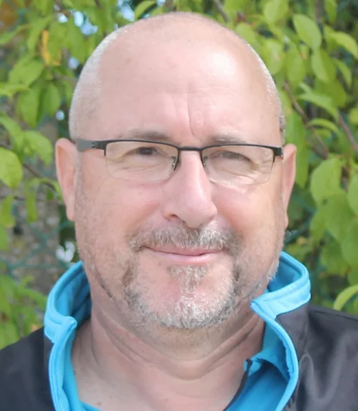
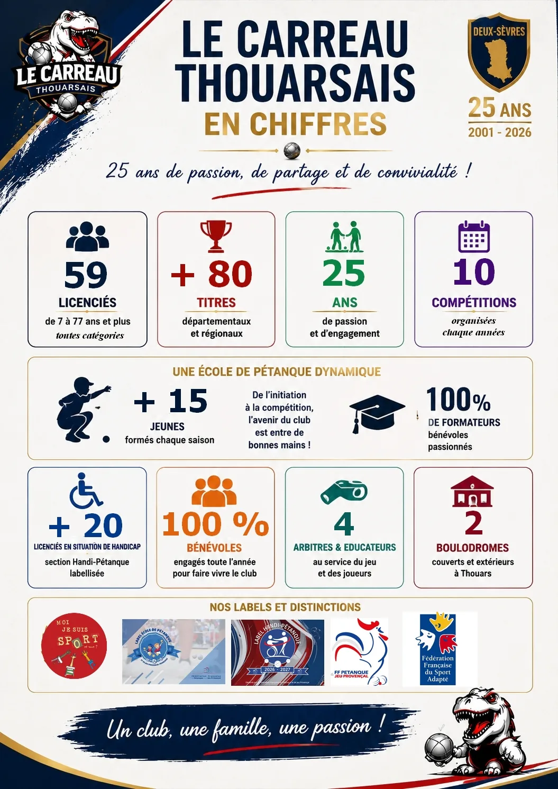

Accueil / Le club
Qui sommes-nous ?
Le club
Depuis 2001, un club de pétanque ouvert à tous : on y joue, on y apprend, on s'y retrouve.

Présentation
Une grande famille autour du cochonnet
Le Carreau Thouarsais est une association de pétanque et jeu provençal basée à Thouars, affiliée à la Fédération Française de Pétanque et Jeu Provençal.
Le club compte aujourd'hui 59 licenciés, de 7 à 77 ans et plus, tous bénévoles dans l'âme. On y trouve des compétiteurs régulièrement titrés, des joueurs de loisir, une école de pétanque pour les jeunes et une section Handi-Pétanque labellisée.
Notre devise : « Le talent fait gagner des rencontres. L'esprit d'équipe construit les grandes histoires. »

Notre esprit
Ce qui nous rassemble
Pour nous, la pétanque est bien plus qu'un sport : un vrai moyen de se retrouver.
Partage
Des moments simples, ensemble, sur le terrain comme autour d'un verre.
Respect
Des adversaires, des arbitres, des bénévoles et de chaque joueur.
Solidarité
Handi-Pétanque, Téléthon, Octobre Rose : le sport au service des autres.
Convivialité
Ouvert à tous, quels que soient l'âge, le niveau ou le parcours.
Notre histoire
25 ans, et toujours la même passion
Le club est né le 29 octobre 2001. Trois anciens membres du bureau du PCT, Philippe Bertrand, Nicolas Renelier et Christian Derangère, décident de créer leur propre club. Ils démarrent avec 41 licenciés.
Depuis, le Carreau n'a cessé de grandir, de former des jeunes et d'ouvrir ses terrains à tous.
- 2001
Naissance du club
Création de l'association le 29 octobre 2001, avec 41 licenciés au départ.
- 2019
École de pétanque labellisée
L'école de pétanque du club reçoit le label de la Fédération Française de Pétanque et Jeu Provençal.
- 2020
Un club ouvert à tous
Les statuts inscrivent l'accueil des personnes en situation de handicap, avec l'ADAPEI 79, et l'éducation à la citoyenneté des jeunes.
- 2026
25 ans et un nouveau label
Le club fête ses 25 ans et obtient le label Handi-Pétanque 2026-2027, seul club labellisé de Nouvelle-Aquitaine cette saison.

Christian Derangère
Pour le président, la pétanque est un formidable vecteur de partage, de respect, de solidarité et de convivialité. Les résultats, l'ambiance familiale et la qualité des entraînements, c'est le travail des bénévoles, des éducateurs, des arbitres et de tous les licenciés.
Priorité du club : former les jeunes à l'école de pétanque, développer la section Sport Adapté avec l'ADAPEI des Deux-Sèvres, et améliorer sans cesse les conditions de jeu, avec le soutien des partenaires.
Le club en une image
Le Carreau en chiffres
100 % de formateurs bénévoles, passionnés, et un club qui vit toute l'année grâce à eux.

Bureau 2025-2028
Les bénévoles qui font vivre le club
Une équipe élue pour animer le club toute l'année : entraînements, concours, école de pétanque, fêtes.
Une question ? Le bureau est joignable via la page Licence / Contact ou au 07 71 62 64 68.